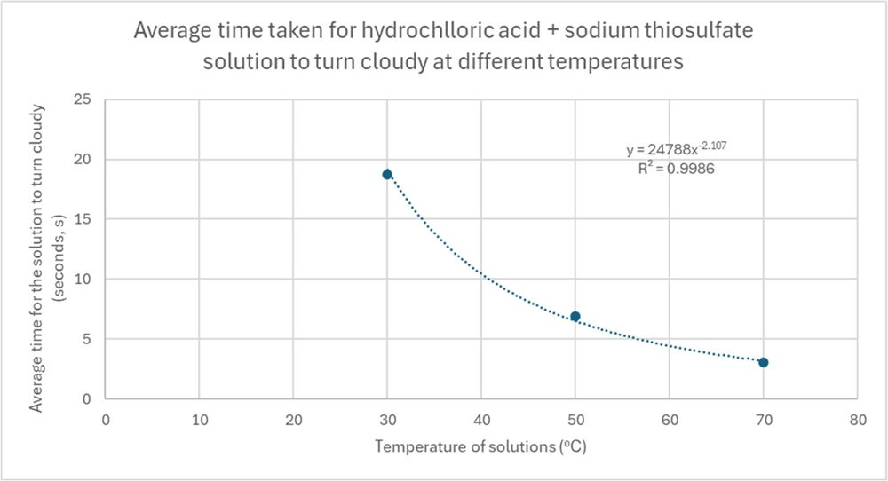
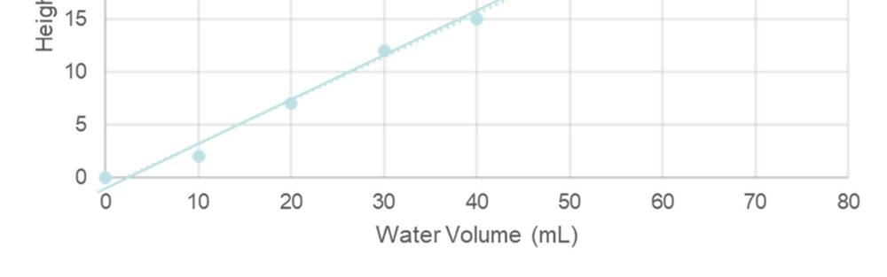
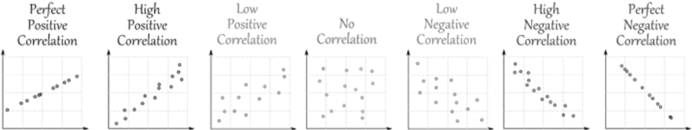
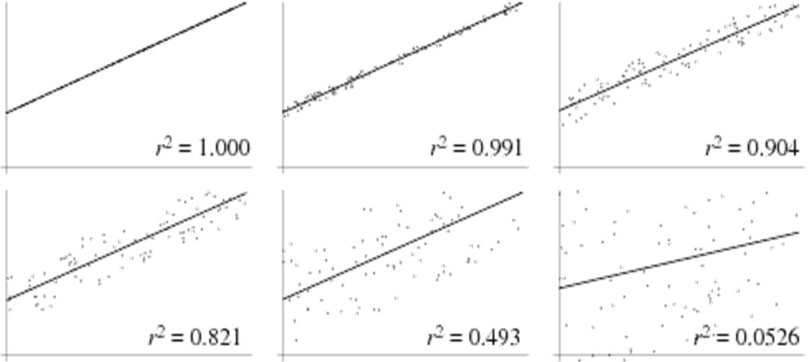
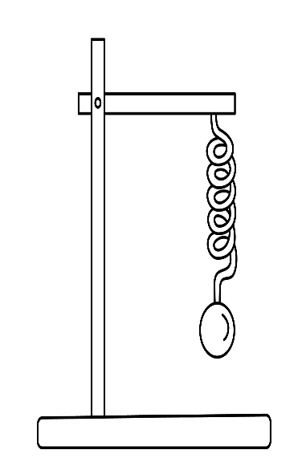
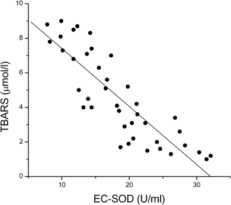
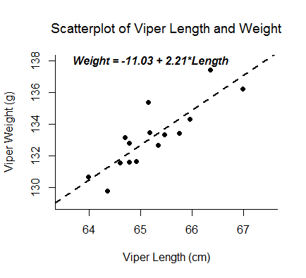

Processing and analysing data and information
This stage involves collecting and analysing data so that a conclusion is possible. It has three parts:
- observing, measuring and recording data
- calculating values from quantitative data and preparing graphs
- describing the trends and patterns, and explaining why they happened.
Types of data
A good plan collects both quantitative data (measurements/numbers) and qualitative data (written observations). Both types must be used in analysis.
- Quantitative data is used to calculate values and draw graphs that show trends and patterns.
- Qualitative data adds descriptions that numbers can't capture. It can help justify or evaluate conclusions drawn from quantitative data.
Qualitative data
Qualitative data means observations made during the experiment, such as colour changes (from what colour to what colour), fizzing or bubbling, shape changes, odours (NOT tastes!) and anything else numbers won't record.
Record qualitative data in a table. You don't need separate observations for each trial of the same variant. Photographs can be included, but they must have a sentence or two of description, and they are only ever qualitative.
Quantitative data
Quantitative data is numbers. Always present it in a table, and:
- put the IV in the first column; it goes on the x-axis of your graph
- calculate an average of your trials; only the average is graphed
- use detailed column headings (with units), which you can copy as your graph's axis titles
- identify outliers in the table and note that they are not included in calculations (outliers often become clear after plotting the graph).
Calculate the average time to turn cloudy at 50°C from the three trials: 7.1 s, 7.6 s and 5.9 s.
(7.1 + 7.6 + 5.9) ÷ 3 = 20.6 ÷ 3 = 6.87 s, which rounds to 6.9 s.
Graphing quantitative data
Graphs show trends that might not be obvious in a table. Graph selection matters!
- If the IV values are continuous (length, mass, volume, temperature...), plot an x-y scatter graph and add a trendline.
- If the IV values are separate categories (house, home group, species...), plot a column graph with a column for each IV value. Do not add a trendline.
- In both cases, the IV is on the x-axis and the DV is on the y-axis.
Adding the trendline equation is useful, and the R2 value indicates how reliable your results are (an R2 value close to 1 is preferred).

Analysis
Analysing data means describing relationships (patterns and trends), discussing how clear the relationship is, and explaining the scientific reasons for it. The explanations are scientific arguments, so they must relate to theory studied in class or found by research, and any sources must be referenced. You should discuss trendlines, correlation, errors, precision and accuracy.
Trendlines
On scatter graphs, trendlines quantify a relationship and can be used to make predictions. The simplest trendline is linear, but choose the type that fits best.

- Extrapolation is making a prediction outside your data range. It is potentially more valuable (e.g. predicting the future), but risky.
- Interpolation is making a prediction inside your data range. It tends to be more reliable, as it uses the existing range of data.
Using y = 0.411x − 0.95, predict the height (y, in cm) for a water volume of 40 mL.
y = 0.411 × 40 − 0.95 = 16.44 − 0.95 = 15.49 cm. This is interpolation if 40 mL is inside the data range.
- Predicting a value inside the range of your data is .
- Predicting a value outside the range of your data is .
- The more reliable of the two is usually .
Correlation
When analysing the effect of an IV (x-axis) on a DV (y-axis) with a scatter plot, an important consideration is correlation. Note that correlation does not imply causation: it simply shows a graphical link between variables.
- For a linear relationship, data may be positively correlated (both increase together) or negatively correlated (one increases as the other decreases).
- The closer the points are to the trendline, the stronger the correlation.
- If the trendline is horizontal, or the points are scattered wildly, there is little or no correlation: the variables are unrelated.

To add a number to the analysis, we quote R2 (the correlation coefficient). The closer R2 is to 1, the stronger the correlation.
| R2 value | Strength of correlation |
|---|---|
| 0 – 0.3 | Weak |
| 0.3 – 0.7 | Moderate |
| 0.7 – 0.9 | Strong |
| 0.9 – 1.0 | Very strong |
| 1.0 | Perfect |

Match each R2 value with the strength of correlation.
Accuracy and precision
It is important to design a method that gives accurate measurements and enough data for reliable results. "Accurate" and "precise" do not mean the same thing!
Measurements can be precise but not accurate: all the values are similar to each other, but far from the true value. A good plan produces data that is both accurate and precise. Precision can also be discussed in relation to equipment: a scale that measures to 2 decimal places gives precise readings.
| High precision | Low precision | |
|---|---|---|
| High accuracy | Shots tightly grouped on the bullseye | Shots spread out, but centred on the bullseye |
| Low accuracy | Shots tightly grouped, but away from the bullseye | Shots spread out and away from the bullseye |
Putting it all together
Analysis and discussion of results
In this section you describe what happened in your experiment, explain why it happened, and relate it back to your hypothesis. The examples below use the rates of reaction data table and Graph 1.
1. What happened? (describing the trends)
Describe the trends or relationships in your graph. Start by referring to what you actually measured, then say what it means.
2. How clear is the trend?
Discuss how close the data points are to the trendline: correlation, accuracy and precision.
3. Why did that happen? (explaining the processes)
Explain why the results turned out the way they did, with reference to relevant scientific theory. This is a scientific argument, so support it with secondary sources and give citations. Whenever you see the word "explain", include the word "because" in your response.
Conclusion
The analysis finishes with a conclusion that answers the research question and relates your findings back to your hypothesis. Don't re-explain your results here; that was done in the discussion. Just state the big discovery you made. (The strength of the conclusion is discussed in the Evaluating section.)
Activity: mass oscillating on a spring
Hypothesis: As the hanging mass (m) increases, the period (T) will increase with a square root relationship, as given by the equation T = 2π √(m / k), where k is the spring constant (stiffness) in N/m.
| Quantity | Apparatus / material | Uncertainty |
|---|---|---|
| 1 | Spring | |
| 1000 g | Slotted mass (2 sets per setup) | |
| 1 | Retort stand and clamp | |
| 1 | Rubber stopper | |
| 1 | Stopwatch | ± 0.005 s |

Method:
- Set up the equipment as shown.
- Attach 300 g on the slotted mass to the bottom of the spring.
- Raise the mass with your hand and release it to let it oscillate.
- Time 5 full oscillations and record the elapsed time.
- Increase the mass by 200 g each time, up to 1000 g, and repeat step 4.
- Repeat each IV value three times to get three trials per mass.
- Record all data in an appropriate table.
(Wear safety goggles while testing.) Complete your data table (hanging mass 0.300, 0.500, 0.700, 0.900 and 1.000 kg; period for trials 1–3; average period), graph, analysis and conclusion, then compare your response with the exemplar on DEEDS.
After collecting your data, write a short analysis (what happened, how clear the trend is, why it happened) and a conclusion for the spring experiment.
A strong answer would say something like:
What happened: "Graph 1 shows that as the hanging mass increased from 0.300 kg to 1.000 kg, the average period of oscillation increased (e.g. from about 0.5 s to about 0.9 s, depending on the spring). The trend is a curve that rises less steeply as the mass increases, matching a square-root relationship."
How clear: comment on how close the points are to a power trendline and quote R2 (e.g. 0.98, very strong), and on precision (how close the three trials were).
Why: "The period increases because a larger mass has more inertia, so the spring's restoring force takes longer to accelerate it, as described by T = 2π √(m / k)."
Conclusion: "Increasing the hanging mass increased the period of oscillation of the spring. The results support the hypothesis that the period increases with the square root of the mass."
Questions
Which of the following is the best definition of accuracy?
A student measures the time for a chemical reaction five times: 16.3 s, 16.2 s, 16.4 s, 16.3 s and 16.3 s. In a later experiment, she finds the true value is 14.3 s. Which describes the accuracy and precision of her initial results?
Her results are very close to each other (high precision) but about 2 s away from the true value (low accuracy). This suggests a systematic error.
Which describes the type and strength of the correlation shown in the chart below (r2 = 0.6)?

4. Vipers
The graph shows the results of an investigation into vipers. The correlation coefficient is r2 = 0.848.

- The type of correlation observed is .
- The strength of the correlation is .
Based on the equation, predict the weight of a viper of length 68 cm.
Weight = −11.03 + 2.21 × 68 = −11.03 + 150.28 ≈ 139 g.
Comment on the reliability of the prediction made in part c.
The reliability is low, because 68 cm is outside the range of the data (about 64–67 cm), so this is extrapolation. We can't be sure the trend continues beyond the measured range. The correlation is also strong rather than very strong, so there is some scatter.